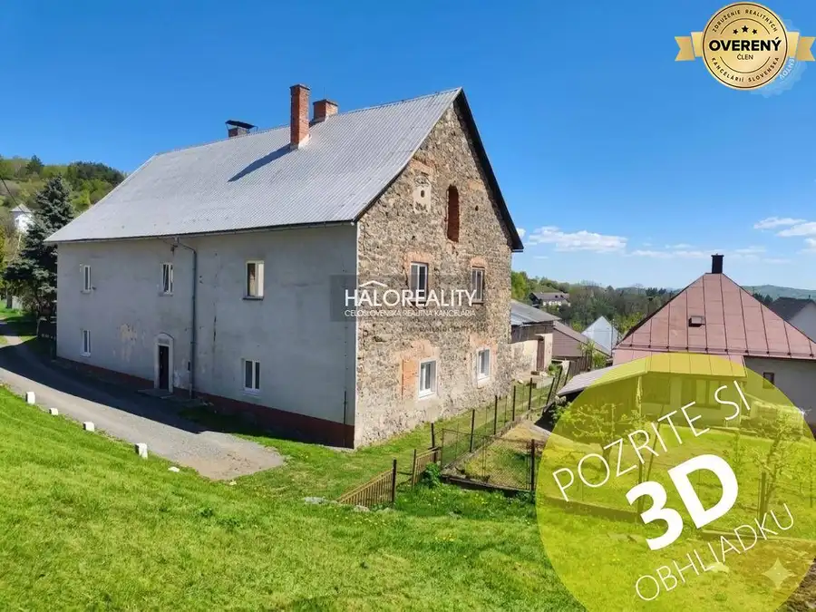
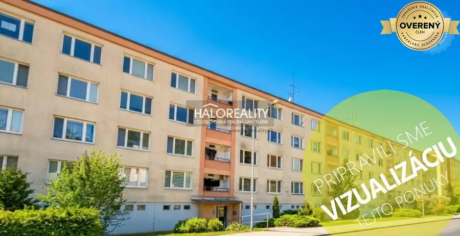
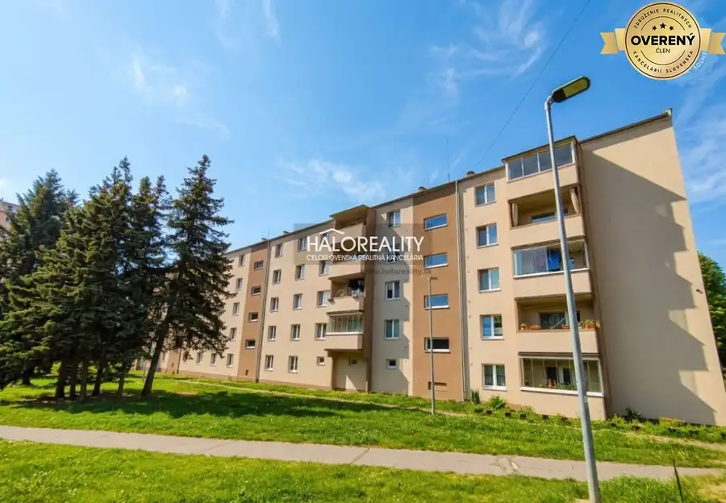
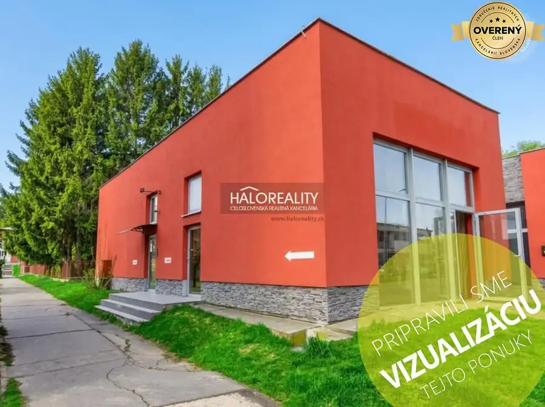
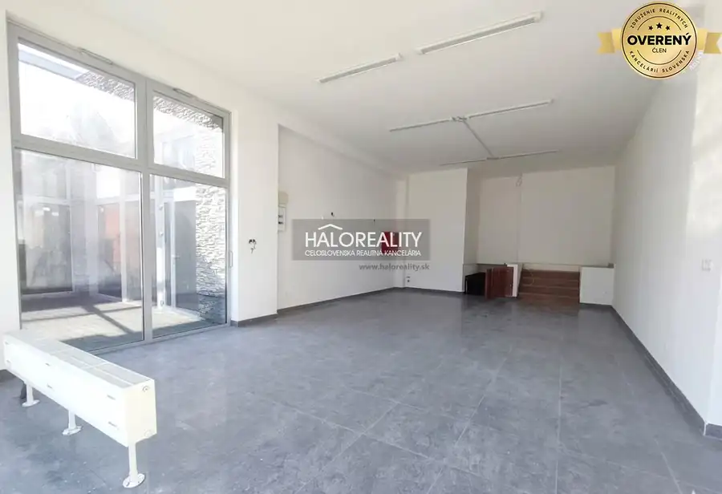
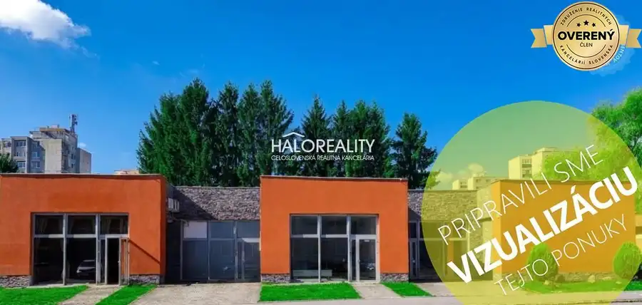
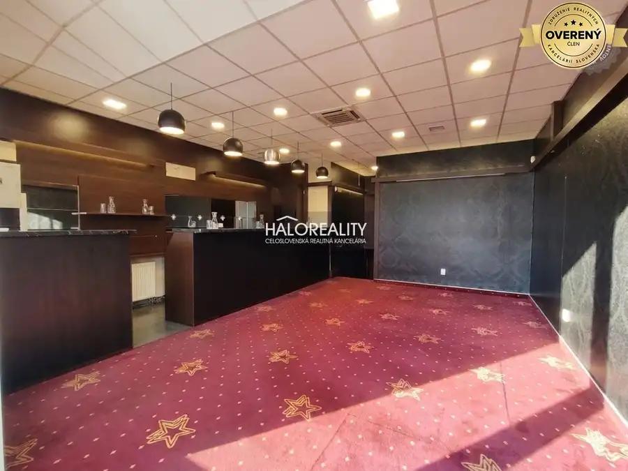
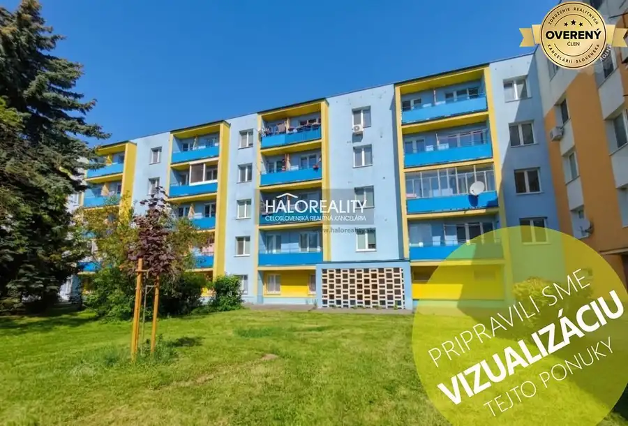
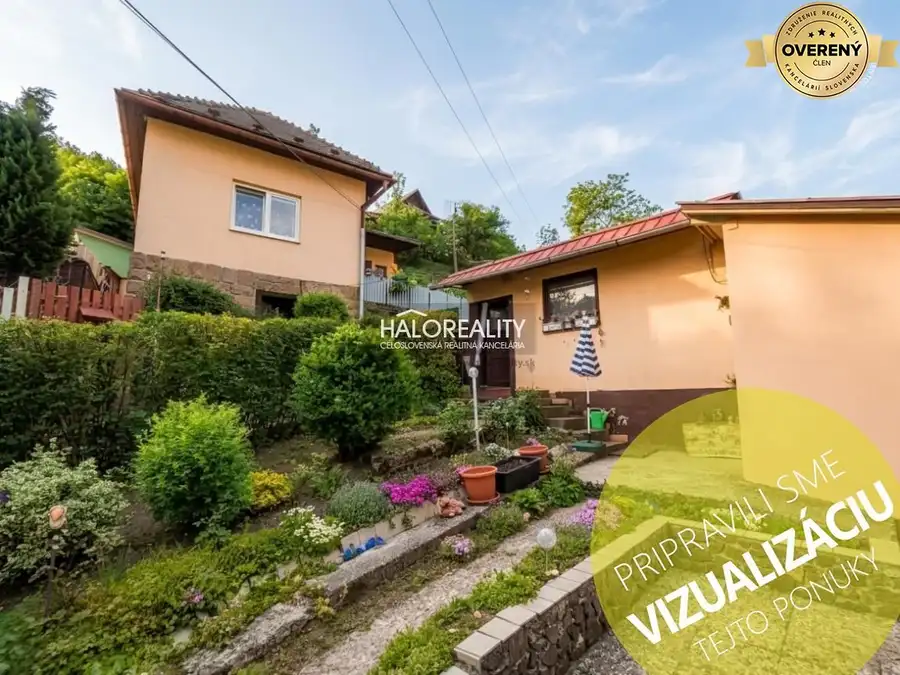
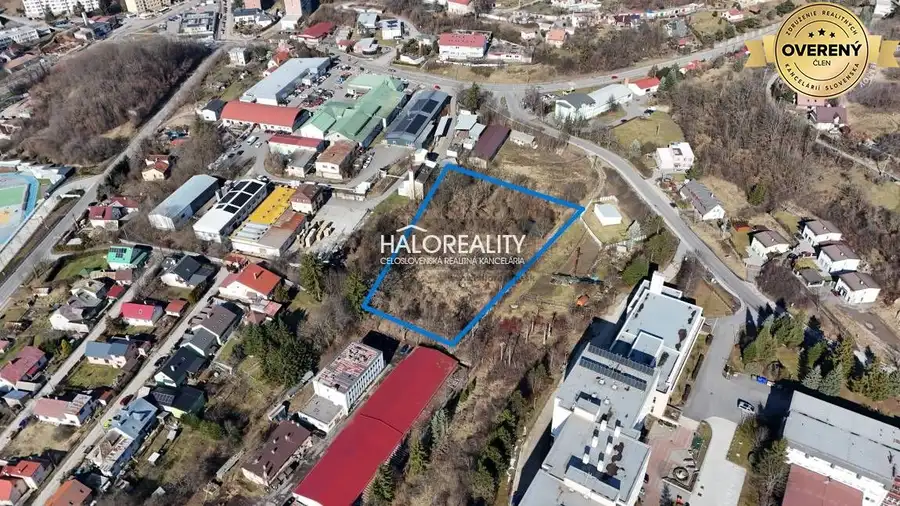

Aktuálna ponuka
Nehnuteľnosti, ktoré ponúkam
10 nehnuteľností na predaj a prenájom. Vyberte typ, alebo napíšte lokalitu.
10 z 10 ponúk

Byt9 120 000 €Predaj, trojizbový byt Štiavnické Bane - EXKLUZÍVNE ... Štiavnické Bane 3-izbový103 m² PONÚKAME VÁM NA PREDAJ: Unikátny historický priestor s dušou v srdci Štiavnických Baní (103 m2) Hľadáte bývanie, ktoré nie je len „štyrmi stenami“,…
Byt9 100 000 €Predaj, jednoizbový byt Zvolen, Podborová - EXKLUZÍV... Zvolen 1-izbový39 m² Hľadáte ideálne štartovacie bývanie, bezpečnú investíciu alebo pokojné miesto pre svojich blízkych? Ponúkame Vám na predaj 1-izbový byt s rozlohou 39…
Byt9 149 500 €Predaj, trojizbový byt Žiar nad Hronom, M. R. Štefán... Žiar nad Hronom 3-izbový75 m² Hľadáte bývanie, ktoré spája moderný štýl, poctivú tehlovú konštrukciu a lukratívnu adresu?Ponúkame Vám na predaj tento slnečný a kompletne…
Nebytové priestory9 110 500 €Predaj, polyfunkcia/obchodné priestory Žiar nad Hron... Žiar nad Hronom 118 m² Hľadáte ideálne miesto pre svoje podnikanie, ktoré kombinuje štýl, svetlo a strategickú polohu? Ponúkame Vám na predaj atraktívny komerčný priestor…
Nebytové priestory9 104 000 €Predaj, polyfunkcia/obchodné priestory Žiar nad Hron... Žiar nad Hronom 111 m² PRÉMIOVÝ PRIESTOR PRE VAŠU AMBULANCIU ČI LEKÁREŇ: Mezanín (80 m2) priamo pri hlavnej ceste Hľadáte reprezentatívne a funkčné miesto pre svoje…
Nebytové priestory9 221 000 €Predaj, polyfunkcia/obchodné priestory Žiar nad Hron... Žiar nad Hronom 202 m² UNIKÁTNA PRÍLEŽITOSŤ: Najväčší mezanínový priestor (162 m2) so srdcom pre gastronómiu Hľadáte vlajkovú loď pre svoje podnikanie? Ponúkame na predaj…
Nebytové priestory8 117 000 €Predaj, polyfunkcia/obchodné priestory Žiar nad Hron... Žiar nad Hronom 131 m² PODNIKAJTE VO VEĽKOM ŠTÝLE: Reprezentatívny mezanín (90 m2) s neobmedzeným potenciálom Hľadáte pre svoje podnikanie priestor, ktorý má „dušu“,…
Byt9 104 000 €Predaj, trojizbový byt Žiar nad Hronom, M. R. Štefán... Žiar nad Hronom 3-izbový68 m² Priestranný 3-izbový byt s loggiou a balkónom v top lokalite Žiaru nad Hronom Hľadáte bývanie v pokojnej lokalite s kompletnou občianskou…
Rodinné domy9 100 000 €Predaj, rodinný dom Banská Štiavnica, Štefultov, + 1... Banská Štiavnica 2-izbový75 m² EXKLUZÍVNE NA PREDAJ: Čarovný kamenný rodinný dom / chalupa v historickej Banskej Štiavnici – časť Štefultov Hľadáte únik z mestského zhonu, miesto…
Pozemok9 206 425 €Predaj, priemyselný pozemok 8257 m2 Banská Štiavni... Banská Štiavnica 8257 m² INVESTIČNÁ PRÍLEŽITOSŤ: Priemyselný pozemok 8 257 m2 v srdci Banskej Štiavnice Hľadáte ideálne miesto pre váš nový projekt, skladovú halu alebo sídlo…Tomuto výberu zatiaľ nezodpovedá žiadna ponuka. Napíšte mi, čo hľadáte.